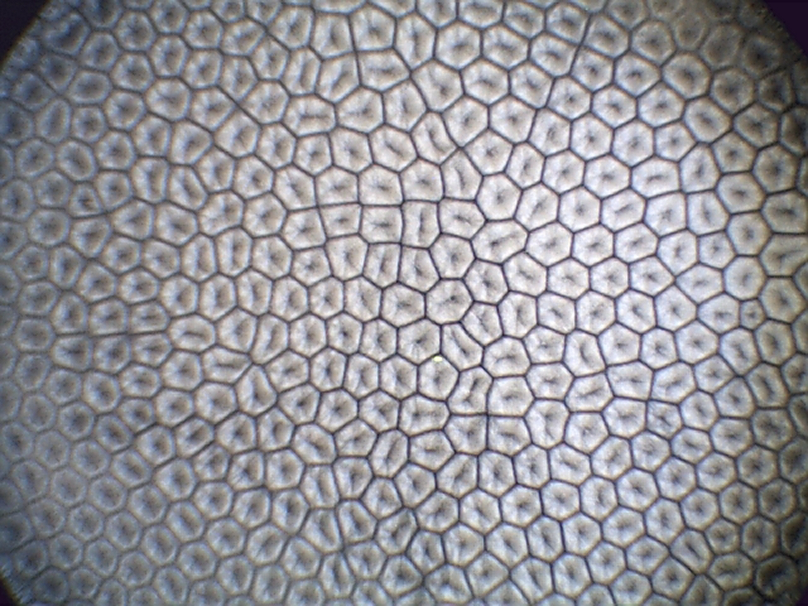
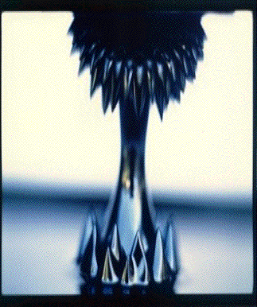

Instabilities in fluid mechanics
If you heat from below a thin layer of liquid, first the heat will
cross the liquid layer through conduction (molecular motions of the
liquid). Above a certain threshold, the amount of heat to be carried
out by the layer is too large and convection sets in the liquid (it
corresponds to fluid motion at a macroscopic scale, see picture on the
left). The transition form a conduction state to a convective state may
be calculated from the basic equations of energy, mass and momentum
conservations. These calculations were the central topic of my Ph.D.
thesis. Details of the calculations may be found in this "old" article
(JFM, 1998). Since 2004, I am coming back to this line of research but
now I am interested in the stability of more complex liquids such as
polymers (with viscoelastic properties) and ferrofluids (that are
sensitive to an applied magnetic field, see picture on the right).
|  |  |
| Marangoni convection | Rosensweig instability |
For
this research project on complex fluids, I am currently collaborating
with Dr. J. Martinez-Mardones and Dr. D. Laroze (Chile).
I
am also collaborating with the Fluid department of the school of
engineering for problems related to liquid jet stability (see TECNUN).
Previous research on thermal plumes (see the movie below) was part of the PhD thesis of my student Angela Bernardini.